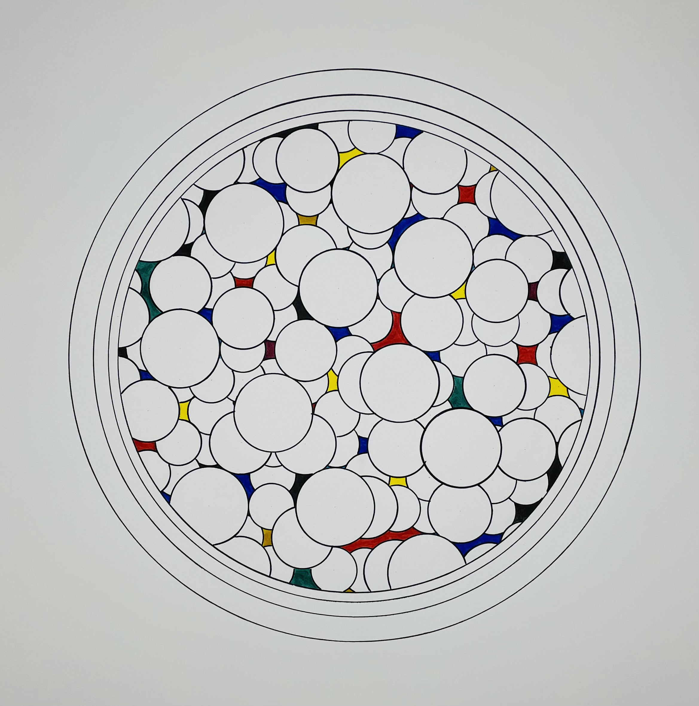

After the Break, 2022 — Markers on paper
Après la rupture, 2022 — Feutres sur papier
بعد الكسر، 2022 — فلوماستر على ورق
Drawing, 2022
Dessin, 2022
رسم، 2022
About the work
À propos de l'œuvre
حول العمل
After the Break is part of a long series exploring the tension between strict geometric order and the instinctive gesture of the hand. Using markers — feutres and Stabilo — on paper, the work pushes each line to the edge of its own structure, where regularity begins to breathe.
The composition is built through accumulation: shape added to shape, each decision informed by what came before. There is no preliminary sketch. The drawing finds its own form in the making.
Après la rupture appartient à une longue série explorant la tension entre l'ordre géométrique strict et le geste instinctif de la main. Réalisée aux feutres — feutres classiques et Stabilo — sur papier, l'œuvre pousse chaque ligne jusqu'au bord de sa propre structure, là où la régularité commence à respirer.
La composition se construit par accumulation : forme après forme, chaque décision informée par ce qui précède. Il n'y a pas d'esquisse préalable. Le dessin trouve sa propre forme dans l'acte même de sa réalisation.
بعد الكسر جزء من سلسلة طويلة تستكشف التوتر بين النظام الهندسي الصارم والإيماءة الغريزية لليد. باستخدام الفلوماستر — الفلوماستر العادي والستابيلو — على الورق، يدفع العمل كل خط إلى حافة بنيته الخاصة، حيث تبدأ الانتظامية في التنفس.
تُبنى التكوينة من خلال التراكم: شكل يُضاف إلى شكل، وكل قرار يستند إلى ما سبقه. لا توجد رسمة تحضيرية. يجد الرسم شكله الخاص في لحظة الإنجاز.
The story
L'histoire
القصة
A music video stayed with me — a British singer I admire throws and smashes plates in a moment of raw truth. It is not violence. It is release — the end of something that no longer fits.
That scene stayed with me. Not the plates, but what they carried: the weight of silence, the pressure of perfection, the circle that repeats until it shatters.
I don't draw things as they look. I draw what I see and feel. So this work came from that feeling — not the breaking itself, but the moment just after, when everything falls apart and something inside can finally breathe.
The circle remains, but it is no longer closed. It is filled with fragments, gaps, and colour. This is not destruction. It is transformation.
Un clip m'a marqué — une chanteuse britannique que j'admire jette et brise des assiettes dans un moment de vérité brute. Ce n'est pas de la violence. C'est une libération — la fin de quelque chose qui ne convient plus.
Cette scène est restée avec moi. Pas les assiettes, mais ce qu'elles portaient : le poids du silence, la pression de la perfection, le cercle qui se répète jusqu'à se briser.
Je ne dessine pas les choses telles qu'elles sont. Je dessine ce que je vois et ressens. Cette œuvre est née de ce sentiment — non pas le bris lui-même, mais l'instant juste après, quand tout se défait et que quelque chose en soi peut enfin respirer.
Le cercle demeure, mais il n'est plus fermé. Il est rempli de fragments, de vides et de couleur. Ce n'est pas de la destruction. C'est une transformation.
علقت في ذهني أغنية مصوّرة — مغنية بريطانية أحبها ترمي الصحون وتكسرها في لحظة صدق خالصة. ليست عنفًا، بل تحرّرًا — نهاية شيء لم يعد يناسبنا.
بقي ذلك المشهد معي. ليس الصحون، بل ما كانت تحمله: ثقل الصمت، وضغط الكمال، والدائرة التي تتكرر حتى تنكسر.
أنا لا أرسم الأشياء كما تبدو، بل أرسم ما أراه وأشعر به. وُلد هذا العمل من ذلك الشعور — لا الكسر نفسه، بل اللحظة التي تليه، حين يتفكك كل شيء فيستطيع شيء في داخلنا أن يتنفس أخيرًا.
تبقى الدائرة، لكنها لم تعد مغلقة. امتلأت بالشظايا والفراغات واللون. هذا ليس تحطيمًا، بل تحوّل.
The feeling
Le ressenti
الإحساس
What draws me to this kind of work is the silence inside repetition. When a gesture is repeated enough times, it stops being a decision and becomes something closer to a pulse — quiet, almost involuntary. After the Break lives in that space.
Ce qui m'attire dans ce type de travail, c'est le silence à l'intérieur de la répétition. Lorsqu'un geste est répété suffisamment de fois, il cesse d'être une décision pour devenir quelque chose de plus proche d'un battement — discret, presque involontaire. Après la rupture habite cet espace.
ما يجذبني إلى هذا النوع من الأعمال هو الصمت داخل التكرار. حين يتكرر إيماء بما يكفي من المرات، يكف عن كونه قراراً ويصبح شيئاً أقرب إلى نبض — هادئ، شبه لاإرادي. بعد الكسر يعيش في ذلك الفضاء.
Details
Détails
التفاصيل